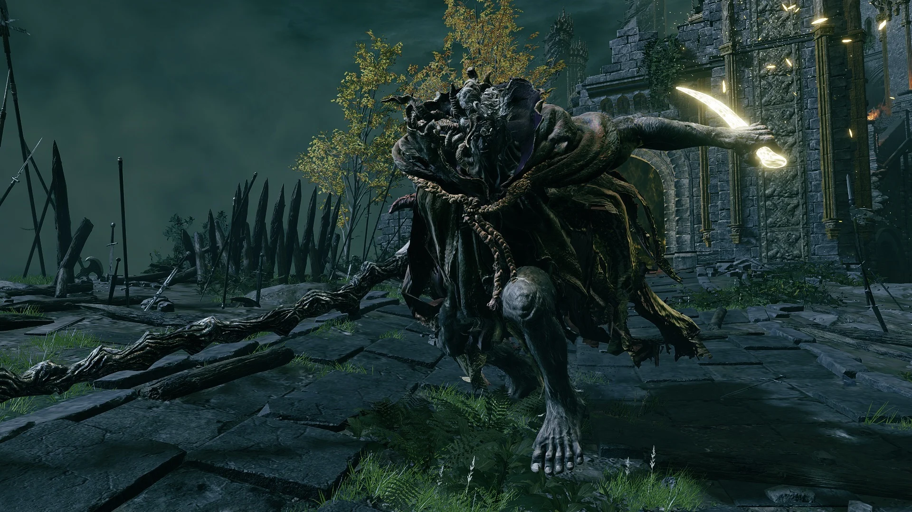
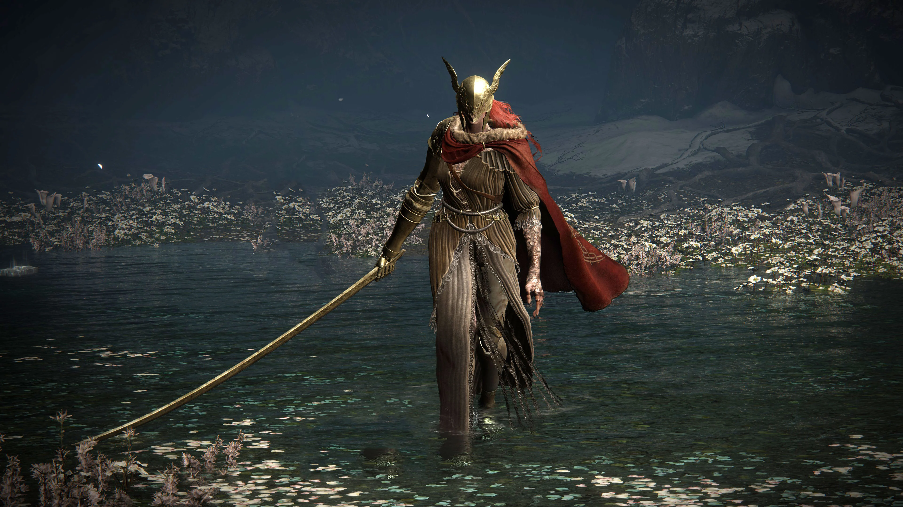

Chefes Principais
Em *Elden Ring*, os chefes principais são figuras de poder imenso, cada uma com sua história, habilidades únicas e papel crucial na trama do jogo. Abaixo estão os 13 chefes principais, que representam os maiores desafios de The Lands Between.
1. Margit, o Presságio Caído
Margit é o primeiro grande obstáculo que os jogadores enfrentam, guardando o caminho para o Castelo Stormveil. Ele combina ataques físicos e mágicos, exigindo paciência e estratégia dos jogadores.
2. Godrick, o Enxertado

Godrick é o governante de Stormveil e um dos descendentes de Marika. Conhecido por enxertar partes de corpos de outras criaturas em si mesmo, Godrick representa o desejo insaciável de poder e é um adversário feroz.
3. Rennala, Rainha da Lua Cheia

Rennala é a líder da Academia de Raya Lucaria e uma poderosa feiticeira. Sua luta é dividida em duas fases, a primeira envolvendo seus estudantes e a segunda revelando seu verdadeiro poder como feiticeira da Lua Cheia.
4. Radahn, o Flagelo Celeste

Radahn é um dos semideuses mais poderosos, capaz de controlar as estrelas. Sua batalha é épica e ocorre em um vasto campo de batalha, onde o jogador pode convocar aliados para ajudá-lo.
5. Rykard, Senhor da Blasfêmia
Rykard se fundiu com a Serpente Devoradora de Deuses, tornando-se uma criatura monstruosa. Ele busca desafiar a ordem divina e usa ataques devastadores de fogo e lava para derrotar seus inimigos.
6. Malênia, a Espada de Miquella
Malênia é uma guerreira ágil e mortal, portadora da Podridão Escarlate. Sua luta é conhecida por ser uma das mais difíceis do jogo, exigindo precisão e estratégia devido à sua capacidade de regenerar saúde com cada golpe.
7. Morgott, o Rei Omen
Morgott, irmão gêmeo de Mohg, é o verdadeiro governante de Leyndell. Ele esconde sua verdadeira identidade como Margit, o Presságio Caído, até que o jogador o enfrente como Morgott, revelando todo o seu poder.
8. Mohg, Senhor do Sangue
Mohg é um semideus corrompido pelo sangue, liderando um culto dedicado ao sangue impuro. Ele busca ressuscitar Miquella, seu irmão adormecido, em uma nova forma divina, utilizando ataques de sangue que drenam a vida do jogador.
9. Maliketh, a Lâmina Negra

Maliketh é o guardião da Morte Destinada e um dos inimigos mais ágeis e letais de Elden Ring. Ele utiliza a Morte Destinada em combate, causando dano contínuo e mortal ao jogador, tornando a luta uma corrida contra o tempo.
10. Dupla de pele divina
A Dupla de Pele Divina são dois sacerdotes poderosos que usam suas habilidades sombrias para lutar juntos. Eles são conhecidos por seus ataques rápidos e devastadores, utilizando armas encantadas com magia negra. A luta contra eles é uma prova de habilidade e estratégia, exigindo que o jogador lide com ambos os inimigos ao mesmo tempo.
11. Godfrey, o Primeiro Lorde Prístino
Godfrey foi o primeiro consorte de Marika e o primeiro Lorde Prístino. Após ser destituído, ele retorna como um fantasma poderoso, usando sua força bruta e habilidades de combate para desafiar o jogador.
12. Radagon da Ordem Dourada
Radagon é a metade masculina de Marika e um dos últimos obstáculos antes do final do jogo. Ele é um guerreiro sagrado que combina força física com poder divino, e sua luta é um dos momentos culminantes de Elden Ring.
13. A Besta Elden

A Besta Elden é a forma final do Anel Prístino, manifestada como uma criatura cósmica. Esta batalha final é uma prova de tudo o que o jogador aprendeu, combinando mecânicas de combate com uma atmosfera épica e desafiadora.